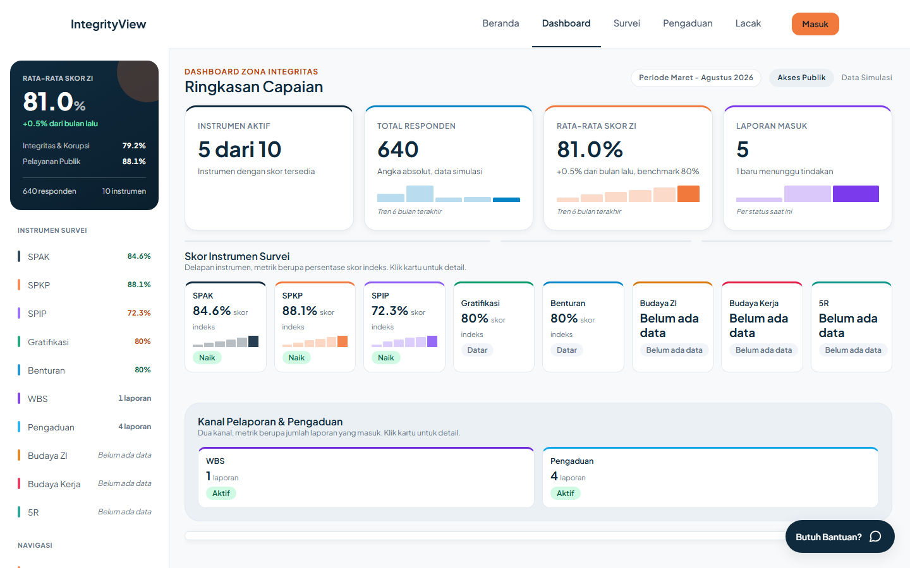

Sivitas
Isi survei lewat Google Form, lihat skor unit sendiri.
- Isi survei
- Lihat skor publik
- Lacak laporan WBS
Zona Integritas PENS
IntegrityView mengubah jawaban survei Zona Integritas menjadi dashboard yang bisa dibaca pimpinan, bukan tumpukan spreadsheet.

1 aplikasi, 3 peran
Isi survei lewat Google Form, lihat skor unit sendiri.
Kelola data, tindak lanjut laporan, dan ekspor rekap.
Baca tren dan rekomendasi sebelum rapat.
Apa isinya
Skor per kategori dan instrumen, langsung dari data survei.
Bandingkan semester tanpa menghitung manual.
Lihat proporsi Setuju dan Sangat Setuju, bukan hanya rata-rata.
Heatmap per instrumen untuk melihat mana yang naik dan turun.
Butir di bawah ambang ditandai prioritas Tinggi atau Pantau.
Laporan siap cetak untuk rapat.
Ganti QR ini dengan URL deployment, video demo, atau halaman pengisian survei.
Jika URL belum tersedia: Temui kami di booth.